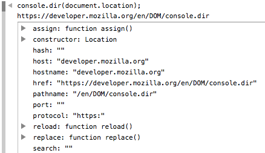

{{APIRef("Console API")}}
The method console.dir() displays an interactive list of the properties of
the specified JavaScript object. The output is presented as a hierarchical
listing with disclosure triangles that let you see the contents of child objects.
In other words, console.dir() is the way to see all the properties of a
specified JavaScript object in console by which the developer can easily get the
properties of the object.
{{AvailableInWorkers}}

console.dir(object);
object{{Compat}}